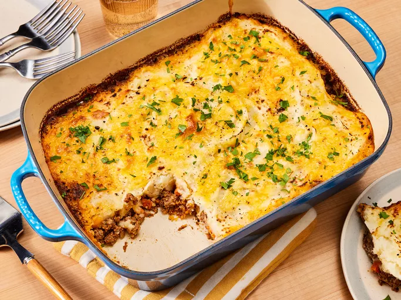

Cottage Pie

Description:
Cottage pie is a classic British comfort food that features a hearty filling of minced meat, typically beef, combined with vegetables and gravy, all topped with a creamy layer of mashed potatoes. This dish is not only filling but also versatile, allowing for variations such as using lamb to create a shepherd's pie or adding spices for a twist. The combination of flavors and textures makes it a family favorite, perfect for cozy dinners.
Ingredients:
- 1 lb (450 g) minced beef
- 1 onion, chopped
- 2 carrots, diced
- 1 cup frozen peas
- 2 tablespoons tomato paste
- 1 cup beef broth
- 4 cups mashed potatoes (prepared)
- Salt and pepper to taste
- Olive oil for cooking
Steps:
- Preheat your oven to 400°F (200°C).
- In a large skillet, heat olive oil over medium heat. Add chopped onion and carrots; cook until softened. Stir in minced beef and cook until browned.
- Mix in tomato paste and beef broth, then add frozen peas. Season with salt and pepper. Simmer for about 10 minutes until slightly thickened.
- Transfer the meat mixture to a baking dish and spread the mashed potatoes on top, smoothing them out.
- Bake in the preheated oven for about 30 minutes or until the top is golden brown.
- Let cool slightly before serving; enjoy this comforting dish warm.